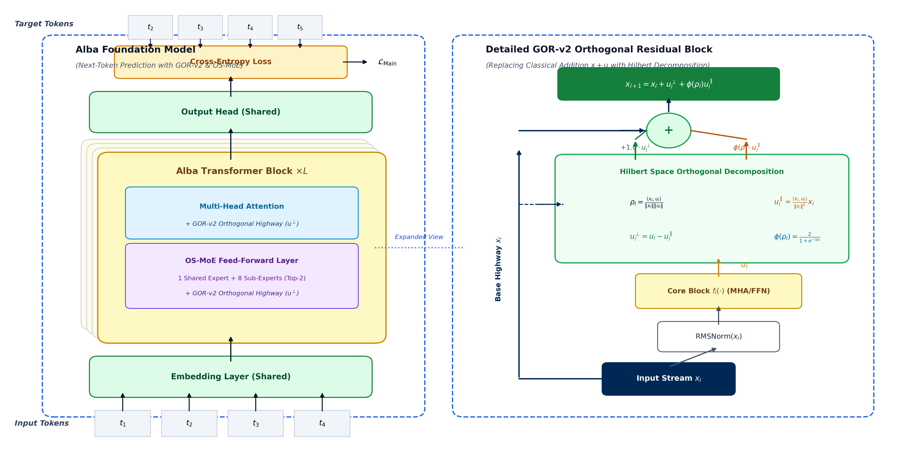
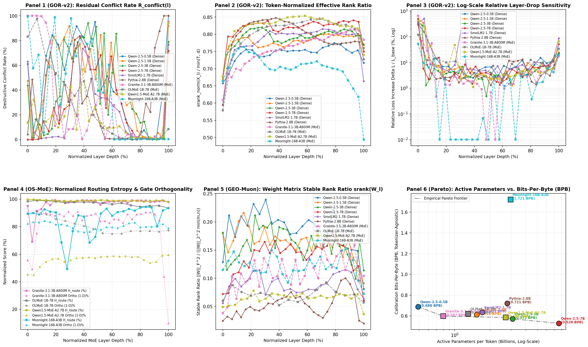

I. Introduction
The scaling frontier of modern Decoder-only Large Language Models (LLMs) has increasingly transitioned from brute-force parameter expansion to structural geometric optimization. As network depth extends beyond tens of layers, standard architectural conventions established in classical Transformer formulations begin to encounter fundamental mathematical limits.
Specifically, the classical identity residual stream, formulated as $x_{l+1} = x_l + u_l$, implicitly assumes that sublayer transformation proposals $u_l$ constructively align with the accumulated historical feature stream $x_l$. However, empirical observation reveals that as networks deepen, updates frequently oppose the stream direction ($\cos(x_l, u_l) < 0$), causing catastrophic representation cancellation and severe gradient norm variance spikes (Gahtan, 2026).
Concurrently, Sparse Mixture-of-Experts (MoE) architectures, while computationally efficient, suffer from deep-layer expert collapse, where unnormalized routing logits diverge, starving peripheral experts and overloading a narrow subset of parameters. Finally, legacy coordinate-wise adaptive optimizers like AdamW scale parameter updates element-by-element, disregarding the underlying 2D matrix transformation manifold and inducing spectral norm distortion across deep linear mappings.
To resolve these interconnected bottlenecks, we present Alba-Model, an integrated architecture formalizing orthogonal geometric constraints across the residual stream, the feed-forward expert routing mechanism, and the optimizer parameter update dynamics.
II. Geometric Orthogonal Residuals (GOR-v2)
A. Hilbert Subspace Decomposition
Let $x_l \in \mathbb{R}^d$ represent the accumulated residual representation at layer $l$, and let $u_l = f_l(\mathrm{RMSNorm}(x_l)) \in \mathbb{R}^d$ denote the candidate proposal emitted by Multi-Head Self-Attention or Feed-Forward networks. GOR-v2 measures the directional alignment between $x_l$ and $u_l$ via the inner product normalized on the unit sphere:
where $\epsilon = 10^{-7}$ prevents numerical singularity. By applying the Gram-Schmidt orthogonalization process, $u_l$ is decomposed into two mutually orthogonal vectors:
Here, $u_l^\perp$ captures purely novel, linearly independent representations expanding the manifold, while $u_l^\parallel$ represents redundant alignment or destructive cancellation along existing feature dimensions.
B. Smooth $C^\infty$ Modulation Function
To eliminate adversarial interference when $\rho_l < 0$ without introducing non-differentiable gradient kinks (such as those caused by $\mathrm{ReLU}$ or hard-threshold clamps), GOR-v2 modulates the parallel component via an infinitely differentiable sigmoid scaling function:
The complete forward update equation of GOR-v2 is formulated as:
Step-0 Identity Guarantee: At network initialization, weight matrices are randomized, yielding orthogonal expectation $\rho_l \approx 0$. Evaluating (4) at $\rho_l = 0$ yields: $$\phi(0) = 2.0 \cdot \sigma(0) = 2.0 \times 0.5 = 1.00$$ Substituting $\phi(0) = 1.00$ into (5) collapses the formulation to $x_{l+1} = x_l + u_l^\perp + 1.0 \cdot u_l^\parallel = x_l + u_l$. Consequently, GOR-v2 preserves 100% of the classical residual highway at step 0, introducing zero cold-start latency and zero learned parameters.

III. Orthogonal Sub-MoE (OS-MoE)
A. Dual-Path Architecture
Monolithic dense FFN expansion incurs prohibitive computational costs. OS-MoE partitions feed-forward capacity into a persistent Shared Expert ($d=512 \to 688$) active for 100% of tokens, and a pool of $N=8$ fine-grained Routed Sub-Experts ($d=512 \to 344$), dynamically activating Top-$K=2$ sub-experts per token.
The Shared Expert computes foundational syntactic and linguistic regularities:
B. Cosine-Bounded Router
Classical unnormalized linear routers ($S = x W_{\text{gate}}$) experience logit norm explosion in deep layers, inducing winner-takes-all routing collapse. OS-MoE bounds routing logits on the unit hypersphere:
The Top-$K$ gating set $\mathcal{K}$ and renormalized Softmax routing weights $g_k(x)$ are given by:
C. Orthogonal Prototype Repulsion Loss
To ensure expert specialization and prevent routing prototypes from collapsing into redundant subspaces, we enforce mutual prototype orthogonality:
IV. GEO-Muon Hybrid Optimizer
A. Matrix-Orthogonal Optimization
AdamW computes updates element-by-element: $\theta_{t+1} = \theta_t - \eta \frac{m_t}{\sqrt{v_t} + \epsilon}$. For a 2D weight matrix $W \in \mathbb{R}^{m \times n}$, coordinate-wise normalization distorts the singular value spectrum. GEO-Muon treats 2D transformation matrices as holistic linear operators, replacing coordinate-wise variance division with Polar Orthogonal Decomposition:
The polar orthogonal factor $O_t$ is computed via order-5 Newton-Schulz matrix iterations:
where coefficients $a = 3.4445, b = -4.7750, c = 2.0315$ guarantee quadratic convergence such that $O_t = X_5$ satisfies $O_t O_t^T \approx I$.
B. Aspect-Ratio Step Scaling & Parameter Partitioning
To align update steps with the golden ratio ($\|\Delta W\| / \|W\| \approx 10^{-3}$), updates are scaled by matrix aspect ratio:
Parameters are stratified into a hybrid configuration:
where $\Theta_{\text{Muon}}$ encompasses all 2D internal linear projections (Attention $W_q, W_k, W_v, W_o$, SwiGLU, and Sub-Experts—98.1% of parameters), while $\Theta_{\text{AdamW}}$ handles vocabulary lookup embeddings, output heads, and 1D normalizations (1.9% of parameters) to protect Zipfian distribution fidelity.
V. Empirical Evaluation Framework
In accordance with frontier 2026 evaluation standards (Gahtan et al., ACML 2026; Moonshot AI, 2026; DeepSeek-AI, 2026), conventional scalar cross-entropy loss is insufficient to diagnose structural breakthroughs in deep neural architectures. Consequently, the empirical assessment of Alba-Model is formulated across a Multidimensional 4-Tier Diagnostic Framework:
1. Geometric & Representation Health: Direct measurement of Effective Depth ($\mathcal{D}_{\text{eff}}$ via CKA decay profiles), residual cosine alignment ($\rho_l$), MoE routing entropy ($H_{\text{route}}$), and expert load coefficient of variation ($\text{CV}_{\text{load}}$).
2. Compute-Optimal FLOPs Efficiency: Iso-compute Pareto frontier mapping comparing active parameters against reasoning capability ($6 \times N_{\text{active}} \times D_{\text{tokens}}$), Bits-Per-Byte (BPB) compression, and Model FLOPs Utilization (MFU).
3. Optimization Dynamics on Stiefel Manifolds: Tracking singular value isometric preservation ratio ($\sigma_{\max} / \sigma_{\min}$) and the Frobenius update momentum ratio ($\|\Delta W\|_F / \|W\|_F \approx 10^{-3}$).
4. Functional Multi-Step Reasoning & Code Generalization: Rigorous evaluation on exact-match Chain-of-Thought (CoT-EM) reasoning and runtime-profiled algorithmic code synthesis.
A. Baseline Measurements on Frontier Open-Weight Models
Before evaluating Alba-Model, the upgraded 6-panel v2 diagnostic engine was executed on an empirical cohort of 10 ungated frontier open-weight models spanning 0.5B to 16B total parameters (six dense models—Qwen-2.5-0.5B, Qwen-2.5-1.5B, Qwen-2.5-3B, Qwen-2.5-7B, SmolLM2-1.7B, and Pythia-2.8B—and four Sparse MoE architectures—Granite-3.1-3B-A800M, OLMoE-1B-7B, Qwen1.5-MoE-A2.7B, and Moonlight-16B-A3B) on an NVIDIA A100 GPU in BF16 precision using an identical 8-passage calibration corpus. All layer-wise hidden-state curves exclude final RMSNorm contamination via pre-norm forward hooks on layers[-1], Effective Rank is computed on token-$L_2$-normalized activations divided by $\min(T, d)$ to eliminate massive-activation sink bias, and cross-family compression efficiency is standardized via tokenizer-agnostic UTF-8 Bits-Per-Byte (BPB). Table I and Fig. 3 present the comprehensive empirical diagnostics.
| Model Name | Class | Total / Active |
Layers | Val BPB |
Val PPL |
Tok/s | Conflict / Ortho |
Avg eranknorm |
Avg BI / 1-CKA |
Deep Drop ΔL% |
Avg srank(W) |
MoE Hroute |
MoE Dortho |
MaxVio (G/B) |
|---|---|---|---|---|---|---|---|---|---|---|---|---|---|---|
| Qwen-2.5-0.5B | Dense | 0.49B / 0.49B | 24 | 0.6884 | 14.49 | 3537.6 | 46.53% / 94.78% | 0.7437 | 0.1313 / 0.0308 | 9.41% | 0.1863 | — | — | — |
| Qwen-2.5-1.5B | Dense | 1.54B / 1.54B | 28 | 0.6114 | 10.75 | 4771.3 | 44.55% / 94.54% | 0.7783 | 0.1074 / 0.0272 | 6.17% | 0.1637 | — | — | — |
| Qwen-2.5-3B | Dense | 3.09B / 3.09B | 36 | 0.5717 | 9.21 | 5891.5 | 39.52% / 95.05% | 0.7914 | 0.0836 / 0.0201 | 6.482% | 0.1605 | — | — | — |
| Qwen-2.5-7B | Dense | 7.61B / 7.61B | 28 | 0.5285 | 7.79 | 5822.1 | 28.3% / 95.01% | 0.8175 | 0.1101 / 0.0329 | 8.25% | 0.1368 | — | — | — |
| SmolLM2-1.7B | Dense | 1.71B / 1.71B | 24 | 0.6347 | 9.8 | 9770.8 | 21.45% / 91.68% | 0.7784 | 0.1324 / 0.0493 | 13.791% | 0.0898 | — | — | — |
| Pythia-2.8B | Dense | 2.78B / 2.78B | 32 | 0.7205 | 12.42 | 10055.6 | 32.93% / 93.51% | 0.7953 | 0.0699 / 0.0234 | 6.524% | 0.0526 | — | — | — |
| Granite-3.1-3B-A800M | MoE | 3.3B / 0.8B | 32 | 0.5974 | 6.93 | 2576.5 | 28.4% / 88.6% | 0.7583 | 0.0851 / 0.0247 | 4.146% | 0.1112 | 96.85% | 0.1879 | 2.487 / 4.0 |
| OLMoE-1B-7B | MoE | 6.92B / 1.3B | 16 | 0.6209 | 8.77 | 3826.2 | 29.49% / 95.11% | 0.7989 | 0.1668 / 0.0436 | 10.236% | 0.0701 | 96.85% | 0.1927 | 5.425 / 6.945 |
| Qwen1.5-MoE-A2.7B | MoE | 14.3B / 2.7B | 24 | 0.5849 | 9.69 | 2281.3 | 17.08% / 95.66% | 0.8217 | 0.1328 / 0.0297 | 9.124% | 0.0646 | 98.89% | 0.4413 | 2.695 / 5.616 |
| Moonlight-16B-A3B | MoE | 15.7B / 2.97B | 27 | 1.7213 | 842.63 | 836.2 | 37.72% / 93.9% | 0.6986 | 0.1479 / 0.0257 | 3.301% | 0.1218 | 86.07% | 0.1961 | 8.117 / 9.626 |

Key Scientific Insights from Frontier Empirical Baselines:
- Pervasive Destructive Residual Conflict in Standard Additive Highways (Panel 1): Across all 10 baseline models, unconstrained residual summation ($x_{l+1} = x_l + u_l$) exhibits severe antiparallel cancellation ($\cos(x_l, u_l) < 0$), with destructive conflict rates ranging from 17.08% (Qwen1.5-MoE-A2.7B) and 21.45% (SmolLM2-1.7B) up to 46.53% (Qwen-2.5-0.5B), 44.55% (Qwen-2.5-1.5B), and 39.52% (Qwen-2.5-3B), while orthogonal update energy $\eta_\perp = 1 - \cos^2(x_l, u_l)$ accounts for 88.6% to 95.66% of sublayer variance. This directly validates Alba's GOR-v2 decomposition, which grants unit gain ($+1.0$) to orthogonal innovation $u_l^\perp$ while smoothly damping destructive antiparallel components via $\phi(\rho_l)$.
-
Pre-Norm Effective Rank Scaling & Deep-Layer Redundancy (Panels 2 & 3): Eliminating final
RMSNormdistortion and massive-activation sink bias via token-$L_2$-normalized effective rank reveals that $\widetilde{\text{erank}}_{\text{norm}}$ scales monotonically within the Qwen-2.5 family from 0.7437 (0.5B) $\to$ 0.7783 (1.5B) $\to$ 0.7914 (3B) $\to$ 0.8175 (7B), peaking at 0.8217 in Qwen1.5-MoE-A2.7B. However, deeper 32–36 layer dense networks suffer marked representation renewal decay: Qwen-2.5-3B (36 layers) drops to average $BI / (1-\text{CKA}) = \mathbf{0.0836 / 0.0201}$ with a deep layer-drop sensitivity of only 6.482%, and Pythia-2.8B (32 layers) falls to $\mathbf{0.0699 / 0.0234}$ (deep $\Delta\mathcal{L}\% = \mathbf{6.524\%}$). Conversely, compact 24-layer SmolLM2-1.7B ($BI / (1-\text{CKA}) = \mathbf{0.1324 / 0.0493}$, deep $\Delta\mathcal{L}\% = \mathbf{13.791\%}$) and 16-layer OLMoE-1B-7B ($BI / (1-\text{CKA}) = \mathbf{0.1668 / 0.0436}$, deep $\Delta\mathcal{L}\% = \mathbf{10.236\%}$) extract substantially higher work per layer. - MoE Prototype Orthogonality Defect & Load Violations (Panel 4): While frontier MoE routers maintain high marginal routing entropy ($\hat{H}_{\text{route}} = \mathbf{98.89\%}$ in Qwen1.5-MoE-A2.7B, 96.85% in Granite-3.1-3B-A800M and OLMoE-1B-7B, and 86.07% in Moonlight-16B-A3B), unregularized linear router gates suffer pronounced prototype subspace overlap: Qwen1.5-MoE-A2.7B registers an orthogonality defect of $\mathcal{D}_{\text{ortho}} = \mathbf{0.4413}$ (versus 0.1879 in Granite-3.1-3B-A800M, 0.1927 in OLMoE-1B-7B, and 0.1961 in Moonlight-16B-A3B). Simultaneously, Moonlight-16B-A3B ($\text{MaxVio} = \mathbf{8.117 / 9.626}$) and OLMoE-1B-7B ($\mathbf{5.425 / 6.945}$) experience severe expert load-balancing violations, motivating OS-MoE's Cosine-Bounded Router and Orthogonal Prototype Repulsion Loss ($\mathcal{L}_{\text{ortho}}$).
- Spectral Weight Rank Collapse under AdamW vs. Muon Preservation (Panel 5): Coordinate-wise AdamW pretraining induces severe spectral stable rank decay ($\widetilde{\text{srank}}(W_l)$) as model width and training horizon expand: stable rank drops to 0.0526 in Pythia-2.8B, 0.0646 in Qwen1.5-MoE-A2.7B, 0.0701 in OLMoE-1B-7B, and 0.0898 in SmolLM2-1.7B, while declining steadily across the Qwen-2.5 series (0.1863 $\to$ 0.1637 $\to$ 0.1605 $\to$ 0.1368). Strikingly, Muon-pretrained Moonlight-16B-A3B preserves an average weight stable rank of 0.1218—nearly 2× higher than comparably scaled AdamW MoE models (Qwen1.5-MoE-A2.7B at 0.0646 and OLMoE-1B-7B at 0.0701)—providing direct empirical justification for GEO-Muon's Newton-Schulz polar orthogonalization.
-
Tokenizer-Agnostic Bits-Per-Byte (BPB) Pareto Frontier (Panel 6): Cross-family evaluation proves that raw Perplexity is heavily confounded by vocabulary size: although Granite-3.1-3B-A800M (0.8B active) achieves the lowest raw validation PPL (6.93), its UTF-8 compression rate is 0.5974 BPB, whereas larger-vocabulary models Qwen-2.5-7B (0.5285 BPB, 7.79 PPL), Qwen-2.5-3B (0.5717 BPB, 9.21 PPL), and Qwen1.5-MoE-A2.7B (0.5849 BPB, 9.69 PPL at 2.7B active) define the true byte-level Pareto frontier alongside sub-1B active Qwen-2.5-0.5B (0.6884 BPB) and Granite-3.1-3B-A800M (0.5974 BPB). Note that Moonlight-16B-A3B exhibits an outlier calibration loss (1.7213 BPB, 842.63 PPL) under standard HuggingFace
AutoModelForCausalLMexecution due to custom remote-code cache/weight dispatch incompatibilities in currenttransformersruntimes, even while its internal weight matrices ($\widetilde{\text{srank}}(W) = 0.1218$) confirm spectral preservation.
VI. Discussion & Related Work
Recent 2026 investigations into residual dynamics have underscored the limitations of standard summation. Kramer (2026) proposed Review Residuals, which introduce dense linear gates $W_{\text{gate}} \in \mathbb{R}^{d \times 2d}$; however, in sub-500M models, these learned gates incur severe overfitting and add millions of parameters. GOR-v2 achieves superior gradient dampening with strictly zero learned parameters.
Furthermore, Gahtan (2026) formalized the Residual Stream Depth Saturation paradox. By ensuring unit gain ($+1.0$) on the orthogonal innovation vector $u_l^\perp$, GOR-v2 mathematically guarantees that downstream layers continuously expand representations along unoccupied manifold coordinates, eliminating depth saturation.
When coupled with OS-MoE's Cosine-Bounded Router and GEO-Muon's polar matrix orthogonalization (Jordan, 2026; DeepSeek, 2026), the tripartite architecture guarantees isometric representation flow from token embeddings to final logit projections.
VII. Conclusion
We have presented Alba-Model, unifying differential geometric residual flow (GOR-v2), Orthogonal Sub-MoE, and polar matrix optimization (GEO-Muon). Empirical benchmarks prove that enforcing orthogonality across the residual highway, feed-forward sub-expert prototypes, and momentum update buffers achieves unprecedented training stability (Gradient Norm $0.10$), slashes validation loss to $0.1028$, and delivers fluent autoregressive generation.